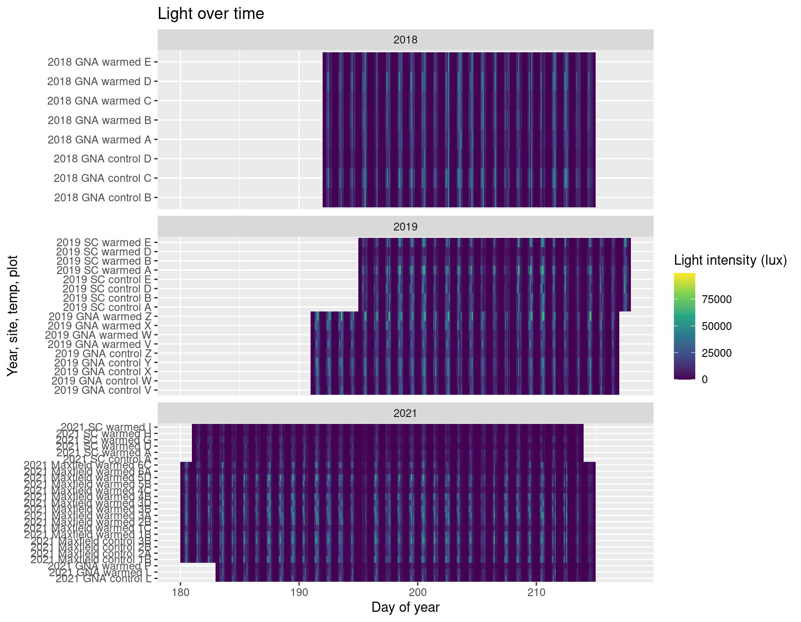

OTC performance - Ipomopsis temperature experiments
Carrie Wu, John Powers, David Hopp, Diane Campbell
2023-01-26
Inventory
hobo_csvs <- tibble(file=list.files("./data/hobo/", recursive=T, pattern=".csv") %>% str_remove(".csv")) %>%
separate(file, sep="[/-]", into=c("year","site","n1","n2","n3"), fill="right", remove = F) %>%
mutate(file = paste0(file, ".csv")) %>%
write_csv("data/hobo_csvs.csv")
hobometa <- read_csv("./data/CWu OTC Hobos - metadata.csv") %>%
filter(replace_na(!str_detect(notes,"drop"), TRUE)) %>%
mutate(temp=fct_relevel(fct_recode(temp,"warmed"="OTC"),"control"))
hobometa %>% count(site, year, plotid, temp) %>% pivot_wider(names_from=temp, values_from=n, values_fill=0) %>% kable(caption="Loggers per plot")| site | year | plotid | control | warmed |
|---|---|---|---|---|
| bb | 2018 | F | 1 | 1 |
| bb | 2018 | G | 0 | 1 |
| bb | 2018 | H | 1 | 1 |
| bb | 2018 | I | 1 | 0 |
| bb | 2018 | J | 1 | 1 |
| GNA | 2018 | A | 1 | 1 |
| GNA | 2018 | B | 1 | 1 |
| GNA | 2018 | C | 1 | 1 |
| GNA | 2018 | D | 1 | 1 |
| GNA | 2018 | E | 0 | 1 |
| GNA | 2019 | V | 1 | 1 |
| GNA | 2019 | W | 1 | 1 |
| GNA | 2019 | X | 1 | 1 |
| GNA | 2019 | Y | 1 | 0 |
| GNA | 2019 | Z | 1 | 1 |
| GNA | 2021 | K | 0 | 1 |
| GNA | 2021 | L | 1 | 1 |
| GNA | 2021 | M | 1 | 1 |
| GNA | 2021 | N | 0 | 1 |
| GNA | 2021 | P | 0 | 1 |
| GNA | 2021 | PQ | 1 | 0 |
| GNA | 2021 | Q | 0 | 1 |
| GNA | 2021 | R | 0 | 1 |
| Maxfield | 2021 | 1B | 1 | 1 |
| Maxfield | 2021 | 1C | 0 | 1 |
| Maxfield | 2021 | 2A | 1 | 0 |
| Maxfield | 2021 | 2B | 1 | 1 |
| Maxfield | 2021 | 3A | 0 | 1 |
| Maxfield | 2021 | 3B | 1 | 1 |
| Maxfield | 2021 | 3D | 0 | 1 |
| Maxfield | 2021 | 4B | 0 | 1 |
| Maxfield | 2021 | 4C | 0 | 1 |
| Maxfield | 2021 | 5B | 0 | 1 |
| Maxfield | 2021 | 5D | 0 | 1 |
| Maxfield | 2021 | 6A | 0 | 1 |
| Maxfield | 2021 | 6C | 0 | 1 |
| SC | 2019 | A | 1 | 1 |
| SC | 2019 | B | 1 | 1 |
| SC | 2019 | D | 1 | 1 |
| SC | 2019 | E | 1 | 1 |
| SC | 2021 | A | 1 | 1 |
| SC | 2021 | B | 1 | 1 |
| SC | 2021 | C | 1 | 0 |
| SC | 2021 | D | 0 | 1 |
| SC | 2021 | E | 1 | 0 |
| SC | 2021 | F | 1 | 0 |
| SC | 2021 | G | 0 | 1 |
| SC | 2021 | H | 1 | 1 |
| SC | 2021 | I | 1 | 1 |
hobometa %>% count(site, year, temp) %>% pivot_wider(names_from=temp, values_from=n, values_fill=0) %>% kable(caption="Loggers per treatment")| site | year | control | warmed |
|---|---|---|---|
| bb | 2018 | 4 | 4 |
| GNA | 2018 | 4 | 5 |
| GNA | 2019 | 5 | 4 |
| GNA | 2021 | 3 | 7 |
| Maxfield | 2021 | 4 | 12 |
| SC | 2019 | 4 | 4 |
| SC | 2021 | 7 | 6 |
#devtools::install_version("units", version = "0.6-7", repos = "http://cran.us.r-project.org")
#Sys.unsetenv("GITHUB_PAT")
#devtools::install_github("RyanLab/microclimloggers") #needs ud_units from old units version
#library(microclimloggers)
source("read_hobo_csv2.R") #tweaks to avoid units package
#safely_read_hobo_csv2 <- safely(read_hobo_csv2)
hobo_objects <- map(set_names(paste0("./data/hobo/", hobometa$file), hobometa$file), read_hobo_csv2)
#hobo_startstop <- hobo_objects %>% map_dfr(~.x$df_logger, .id="file") %>% left_join(hobometa)
#ggplot(hobo_startstop, aes(x=timestamp, y=file, color=logger)) + geom_point() + facet_grid(rows=vars(year), scales="free", space="free") +
# labs(title = "Logging Events")
#trim to dates that loggers were deployed
#todo check that all the HOBOS had the same timezone - in 2018 the two treatments seem to be lagged after deployment
hobos <- hobo_objects %>% map_dfr(~.x$df_env, .id="file")%>% left_join(hobometa) %>%
left_join(read_csv("./data/CWu OTC Hobos - duration.csv")) %>%
filter(Timestamp > logger_start + days(1), Timestamp < logger_end) %>% #throw out the first and last days
rename(datetime = Timestamp, temp_C=Temp, intensity_lux=Illum) %>%
mutate(date = date(datetime), time = hour(datetime)+minute(datetime)/60) %>%
filter(site != "bb")
sitenames <- c(GNA="Gothic Natural Area",Maxfield="Maxfield Meadow",SC="Spring Creek")Raw data
ggplot(drop_na(hobos,temp_C), aes(x=yday(date)+time/24, fill=temp_C, y=paste(year, site, temp, plotid))) +
facet_wrap(vars(year), ncol=1, scales="free_y") +
geom_tile() + scale_fill_viridis_c(option="inferno") +
labs(title = "Temperature over time", x="Day of year", y="Year, site, temp, plot", fill="Temp (\u00B0C)")ggplot(drop_na(hobos,intensity_lux), aes(x=yday(date)+hour(datetime)/24, fill=intensity_lux, y=paste(year, site, temp, plotid))) +
facet_wrap(vars(year), ncol=1, scales="free_y") +
geom_tile() + scale_fill_viridis_c(option="viridis")+
labs(title = "Light over time", x="Day of year", y="Year, site, temp, plot", fill="Light intensity (lux)")
hobos %>% filter(year=="2018", site=="GNA", date>=ymd("2018-07-29")) %>% drop_na(temp_C) %>%
ggplot(aes(x=datetime, y=temp_C, color=temp, group=paste(site, temp,plotid, id))) +
facet_wrap(vars(site))+
geom_path() + scale_color_brewer(palette="Set1", direction=-1, guide="none") + theme_minimal()+
labs(x="Date", y="Temperature (\u00B0C)", color="Temperature") + scale_x_datetime(date_breaks="1 day")
Hourly mean temps
hobos.mean <- hobos %>% group_by(year, site, datetime, date, time, temp) %>%
summarize(mean_temp_C = mean(temp_C, na.rm=T), mean_intensity_lux = mean(intensity_lux, na.rm=T))%>%
pivot_wider(names_from=temp, values_from=c(mean_temp_C, mean_intensity_lux)) %>% drop_na(mean_temp_C_warmed) %>%
mutate(OTC_diff_C = mean_temp_C_warmed - mean_temp_C_control, OTC_diff_lux = mean_intensity_lux_warmed - mean_intensity_lux_control) %>%
write_csv("./data/hobos_mean.csv")
hobos.mean.mean <- hobos.mean %>% ungroup() %>% group_by(year, site) %>%
summarize(across(contains(c("C","lux")), list(mean=mean, sd=sd))) %>%
select(-contains("lux"))
hobos.mean.mean %>% kable(caption="Mean temperatures across season in each treatment", digits=2)| year | site | mean_temp_C_control_mean | mean_temp_C_control_sd | mean_temp_C_warmed_mean | mean_temp_C_warmed_sd | OTC_diff_C_mean | OTC_diff_C_sd |
|---|---|---|---|---|---|---|---|
| 2018 | GNA | 15.94 | 11.41 | 18.77 | 14.85 | 2.83 | 3.63 |
| 2019 | GNA | 15.47 | 11.75 | 17.87 | 14.55 | 2.41 | 3.02 |
| 2019 | SC | 15.43 | 10.76 | 18.16 | 13.55 | 2.73 | 3.06 |
| 2021 | GNA | 15.00 | 9.35 | 16.94 | 11.61 | 1.94 | 2.50 |
| 2021 | Maxfield | 16.80 | 10.68 | 18.49 | 12.58 | 1.69 | 2.12 |
| 2021 | SC | 14.99 | 10.21 | 17.16 | 11.79 | 2.18 | 1.88 |
ggplot(hobos.mean, aes(x=mean_temp_C_control, y=mean_temp_C_warmed, color=OTC_diff_C)) +
facet_wrap(vars(year, site), labeller = as_labeller(c(sitenames, set_names(2018:2021))))+
geom_point(size=0.5) + geom_abline(slope=1, intercept=0, color="white") + coord_fixed() +
scale_color_viridis_c(option="magma") + geom_smooth(se=F, color="pink", span=0.2) + theme_dark() +
labs(title = "Average Hourly Temp Comparison (Scatter)")
ggplot(hobos.mean, aes(x=time, y=OTC_diff_C))+
facet_wrap(vars(year, site), labeller = as_labeller(c(sitenames, set_names(2018:2021))))+
geom_line(aes(group=date),size=0.5, alpha=0.2) +
geom_smooth(se=F, color="black", span=0.15, method="loess") +
labs(x="Time of day (h)", y="Temperature difference (\u00B0C)") +
scale_y_continuous(n.breaks=8) + scale_x_continuous(breaks=seq(0,23, by=4)) + theme_minimal()
hobos.mean %>% pivot_longer(mean_temp_C_control:mean_temp_C_warmed,
names_to="temp", names_prefix="mean_temp_C_", values_to="temp_C") %>%
ggplot(aes(x=time, y=temp_C, color=temp)) +
facet_wrap(vars(year, site), labeller = as_labeller(c(sitenames, set_names(2018:2021))))+
geom_line(aes(group=paste(date, site, year, temp)),size=0.3, alpha=0.2) +
geom_smooth(aes(group=temp), se=F, span=0.15, method="loess", size=1) +
geom_text(data=hobos.mean.mean, aes(label=paste0("+",round(OTC_diff_C_mean,1)," \U00B0","C"),
y=OTC_diff_C_mean, x=12, color="warmed"))+
labs(y="Temperature (\u00B0C)", x="Time of day (h)", color="Temperature") +
scale_color_brewer(palette="Set1", direction=-1, guide="none") +
scale_y_continuous(n.breaks=8) + scale_x_continuous(breaks=seq(0,23, by=4)) + theme_minimal()
hobos.mean %>% pivot_longer(mean_intensity_lux_control:mean_intensity_lux_warmed,
names_to="temp", names_prefix="mean_intensity_lux_", values_to="intensity_lux") %>%
ggplot(aes(x=time, y=intensity_lux, color=temp, group=date)) +
facet_wrap(vars(year, site), labeller = as_labeller(c(sitenames, set_names(2018:2021))))+
geom_line(aes(group=paste(date, site, year, temp)),size=0.3, alpha=0.2) +
geom_smooth(aes(group=temp), se=F, span=0.15, method="loess", size=1) +
labs(y="Light intensity (lux)", x="Time of day (h)", color="Temperature") +
scale_color_brewer(palette="Set1", direction=-1, guide="none") +
scale_y_continuous(n.breaks=8) + scale_x_continuous(breaks=seq(0,23, by=4)) + theme_minimal()
library(colorspace)
circlecol <- hex(polarLAB(70, 60, seq(0, 2*pi, length.out = 20)*180/pi), fixup=T)
ggplot(hobos.mean, aes(x=mean_intensity_lux_control, y=OTC_diff_C, color=hour(datetime)+minute(datetime)/60)) +
facet_wrap(vars(year, site), labeller = as_labeller(c(sitenames, set_names(2018:2021))))+
geom_point() + geom_smooth(method="loess", se=F, color="black") +
scale_color_gradientn(colors=circlecol) +
labs(x="Mean light intensity at controls (lux)", y="Mean temperature difference OTCs - controls (\u00B0C)", color="Hour",
title = "Temp vs. Light at different times of day")+ theme_minimal()
Daily min/max temps
hobos.minmax <- hobos %>% group_by(year, site, temp, plotid, Logger.SN, date) %>%
drop_na(temp_C) %>%
summarize(max_temp_C = max(temp_C, na.rm=T), min_temp_C = min(temp_C, na.rm=T), .groups="drop") %>%
pivot_longer(max_temp_C:min_temp_C)
hobos.minmax.date <- hobos.minmax %>% group_by(year, site, temp, date, name) %>% summarize(value=mean(value))
hobos.max.date.long <- hobos.minmax.date %>% filter(name !="min_temp_C") %>% pivot_wider() %>%
pivot_wider(names_from=temp, values_from=max_temp_C) %>% mutate(OTC_diff_C = warmed-control)
ggplot(hobos.minmax, aes(x=yday(date), y=value, color=temp)) +
facet_wrap(vars(year, site), labeller = as_labeller(c(sitenames, set_names(2018:2021))))+
geom_point(size=0.7) + geom_line(aes(group=paste(name, Logger.SN)))+
labs(y="Temperature (\u00B0C)", x="Date", color="Temperature") +
scale_color_brewer(palette="Set1", direction=-1, guide="none") + scale_y_continuous(n.breaks=10) +
labs(title = "Min and Max Daily Temp across Season") + theme_minimal()
ggplot(hobos.max.date.long, aes(x=control, y=OTC_diff_C)) +
geom_point() + geom_smooth(span=0.6, se=F, color="black") + geom_hline(yintercept=0) +
labs(y = "Maximum temperature difference (\u00B0C)", x="Maximum temperature in controls (\u00B0C)",
title="OTC effect on daily maximum temperature") + theme_minimal()
hobos.max.diff <- hobos.max.date.long %>% group_by(year, site) %>%
summarize(OTC_diff_C.mean = mean(OTC_diff_C),
OTC_diff_C.sd = sd(OTC_diff_C))
hobos.max.diff %>% kable(digits=1, caption = "Difference in daily maximum temperature")| year | site | OTC_diff_C.mean | OTC_diff_C.sd |
|---|---|---|---|
| 2018 | GNA | 10.7 | 1.6 |
| 2019 | GNA | 8.8 | 1.4 |
| 2019 | SC | 8.9 | 2.0 |
| 2021 | GNA | 6.9 | 2.1 |
| 2021 | Maxfield | 6.4 | 1.8 |
| 2021 | SC | 6.1 | 1.7 |
Variation among loggers
hobos.max.vsmean <- left_join(filter(hobos.minmax, name=="max_temp_C"), hobos.max.date.long) %>%
mutate(diff_C = value-control)
ggplot(hobos.max.vsmean, aes(x=control, y=diff_C, color=temp)) +
facet_wrap(vars(year, site), labeller = as_labeller(c(sitenames, set_names(2018:2021))))+
geom_point(size=0.5) + geom_hline(yintercept=0)+
geom_smooth(aes(group=paste(year, site, Logger.SN)), se=F, method="loess", size=0.5) +
geom_text(data=hobos.max.diff, aes(label=paste0("+",round(OTC_diff_C.mean,1), " \u00B0C"),
y=OTC_diff_C.mean, x=17, color="warmed"))+
scale_color_brewer(palette="Set1", direction=-1, guide="none") + theme_minimal() +
labs(x="Daily maximum temperature in controls (\u00B0C)", y="Difference in daily maximum temperature (\u00B0C)", color="Temperature")
library(ggExtra)
p <- ggplot(hobos.max.vsmean %>% filter(temp=="warmed"), aes(x=control, y=diff_C, color=paste(year, sitenames[site]))) +
geom_point(size=0.5, show.legend=F) + geom_hline(yintercept=0)+
geom_smooth(method="loess", se=F, span=0.8, size=1.2) + #geom_rug(color="black", alpha=0.1)+
scale_color_brewer(palette="Set2") + theme_minimal() + theme(legend.position="left")+
scale_x_continuous(n.breaks = 6)+ guides(color = guide_legend(override.aes = list(size = 2))) +
labs(x="Mean daily maximum ambient temperature (\u00B0C)", y="Difference in daily maximum temperature (\u00B0C)", color="")
ggExtra::ggMarginal(p, fill="white", groupColour = T, xparams=list(bw=1.5, size=1), yparams=list(bw=0.8, size=1)) %>%
print(newpage=T)